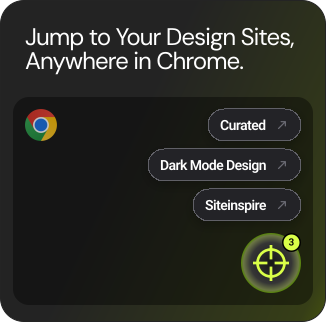

Chrome extension · Design resources
Explore
Your Design Sites
Atlas keeps the design-asset sites you already save one hover away. Click the FAB to explore the full library by group; hover it for the sites you've starred as favorites — each opens in a new tab, leaving the work you're in untouched.

0 curated sites
/
22 tags
/
3 explore groups
Explore
Sites you star are pinned to the FAB in Chrome, so you can jump to them from any page.